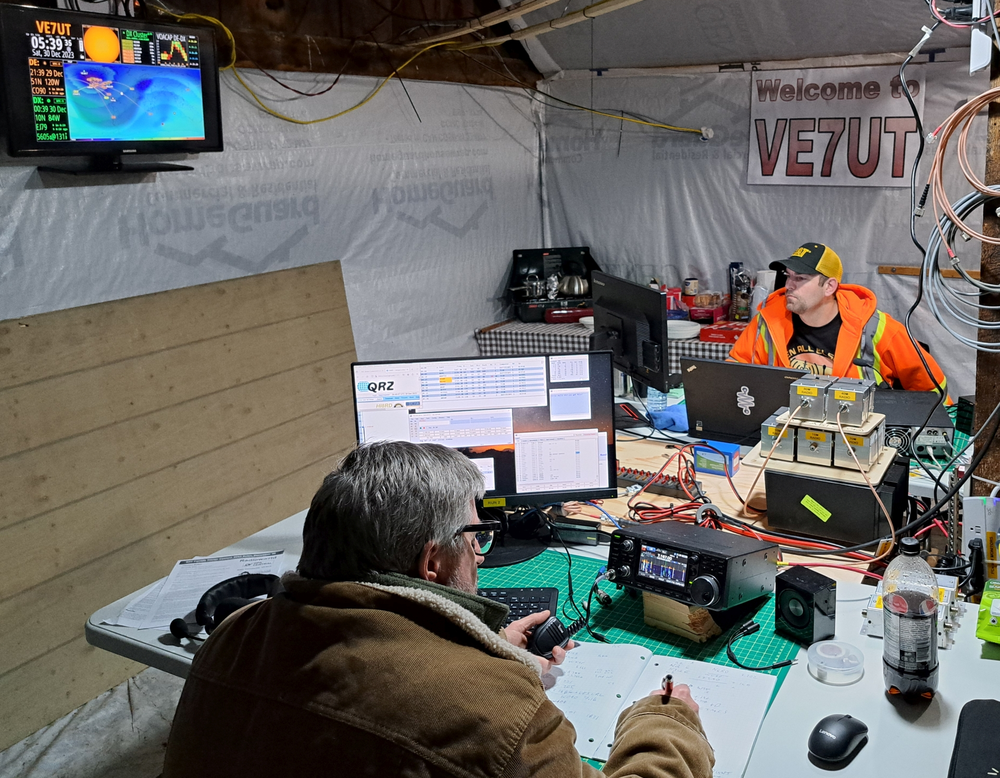
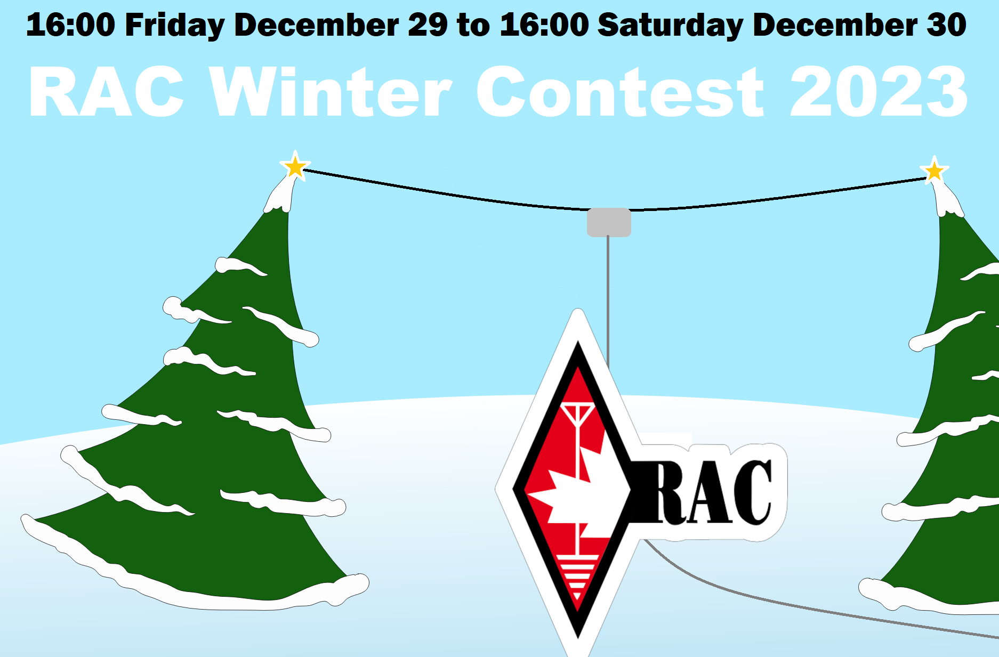
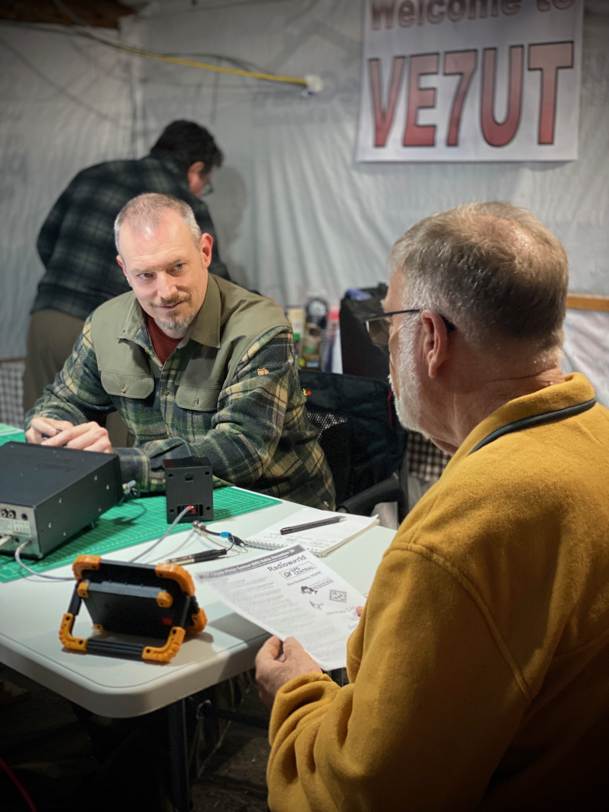
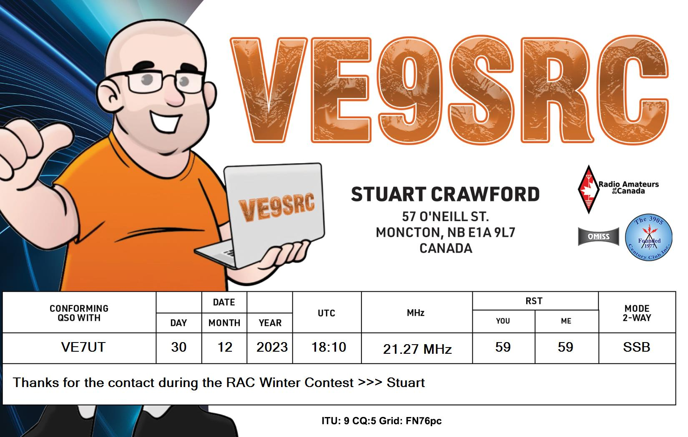
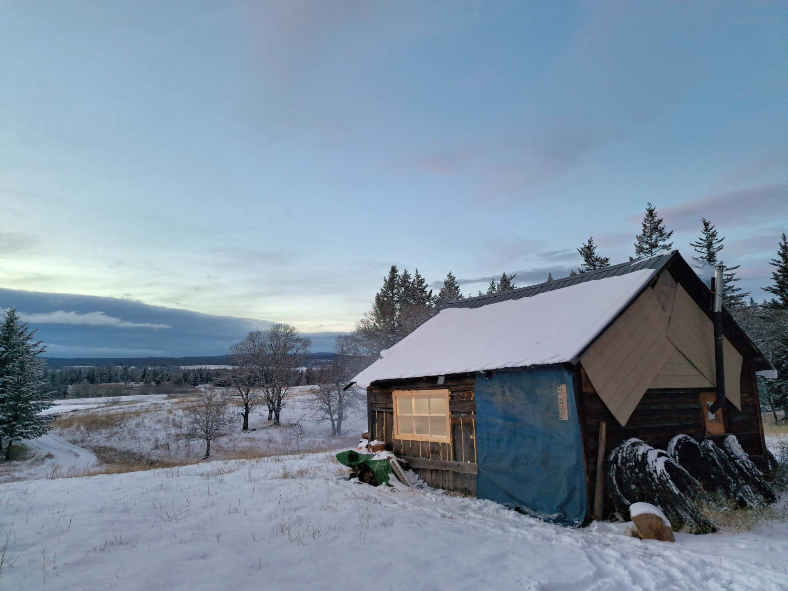

RAC Winter Contest 2023
Back to StoriesStory 764
Sat, 2023-12-23 21:14 — VE7FSR

UPDATE DEC 30 -- Myles VE7FSR was up early (4AM!) and got the generator refilled and the shack back in operation.
Shortly after Iain VE7IET got up, followed by Dave VA7DRS.
The bands have been up and down this morning, but we're plugging away and logging the contacts.
It was a beautiful evening last night, stars and a bright moon, and not too cold for tent camping.
We've uploaded a bunch of photos to the album, so check those out to see what things are like up at the barn.


UPDATE DEC 29 -- VE7UT is live and active on the HF bands!
We had an awesome turnout today, with Myles VE7FSR, Ralph VA7VZA, Iain VE7IET, Peter VE7DNZ, Dave VE7LTW, Simon VE7RIZ, and Austin VE7QH.
Dave VA7DRS, Mike VE7KPZ and Jane VE7WWJ came all the way from Vernon.
Ralph and Rita (XYL) made a batch of awesome chili which was enjoyed by everyone, and Dave VE7LTW brought fresh donuts from Tim Hortons.
Band conditions were great until about 8PM when things started to slow down.
Simon and Iain were diehards and continued to work despite challenging band conditions.
UPDATE DEC 28 -- We are almost ready for the RAC Winter Contest !
Some of us will start arriving at the barn around noon on Friday to hook up the coax for the EFHW antenna and get the fire going in the wood stove.
Looking forward to seeing you soon!
UPDATE DEC 17 -- Thank you to Ralph, Iain, and Shane who helped set up the antennas (see image below) this weekend.


The Kamloops Amateur Radio Club will be participating in the 2023 RAC Winter Contest , starting at 1600 PST on Friday, December 29 , and finishing at 1600 on Saturday, December 30, using the club callsign VE7UT on CW and phone.
We will be hosting the contest at the Winter Field Day barn on the farm of Peter, VE7DNZ .
There are two cots in the barn (bring your own foamie and sleeping bag) and lots of space for outside camping.
Please bring your own chair, and we will have hot chili and corn bread for dinner on Friday night (thank you to Rita and Ralph).
There will be a Coleman stove for cooking (bring your own cooking accoutrements), and a kettle on the woodstove for coffee, tea and hot chocolate.
We made some improvements since last year, so it will be warmer and brighter in the barn.
Here are some photos of the site and the crew getting things ready for the event. legacy site link removed A Google Earth KMZ file is attached showing the location of the barn .
Here is a link to Google Maps that you can use to help you navigate from the Knutsford Community Hall to the parking spot on Mannings Road. https://goo.gl/maps/JU2nxVxyJNDHnT9N8 If the weather stays mild we should be able to drive right to the barn.
We will be monitoring 147.320+ (the VE7RLO repeater) and 146.520 so if you need directions to the site or a shuttle in from the parking area please call "CQ VE7UT".
We will also be broadcasting the RAC Winter Contest location on APRS, look for VE7UT on aprs.fi!

You don't have to be a KARC member to join us, all hams and visitors are more than welcome.
We look forward to seeing you there!
PS.
Bathroom facilities will be " primitive " so please be forewarned!
Attachment Size CanadaWinterContest2023_Rules_eng.pdf 601.09 KB Winter Field Day VE7UT.kmz 732 bytes Contest Site.png 1.66 MB